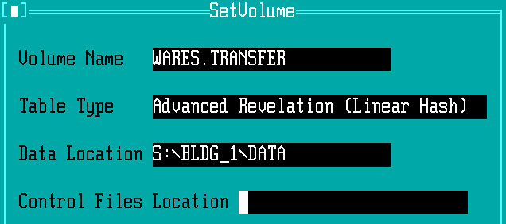

Moving WARES Data¶
A feature of WARES is the ability to maintain separate datasets in attachable volumes. When WARES is used on stand-alone systems in separate buildings, each building will have its own dataset (or maybe, multiple sets).
The difficulty with having multiple WARES installations is a lack of central control for management and for billing. The problem of decentralized software is addressed by installing WARES on a central server and using remote access to distribute the software to individual offices, as is described in article AAD Server. This article addresses the remaining problem of consolidating multiple WARES program datasets on one central server.
Special considerations¶
When each WARES database at stand-alone WARES copies has a unique identifier
for its dataset, the separate datasets can be copied directly to separate
directories on the central WARES server. However, WARES will not work with
separate volumes which all use volume name WARES.DATA, and which contain
identical underlying file names.
Therefore moving WARES data from separate systems to a consolidated server always requires copying whole directories of data files, and may require creating new data directories (volumes) and moving individual account data into the new volumes.
Prepare WARES volumes¶
Start the WARES program from a workstation attached to the server, and login using the supervisor access password.
At Tools ‣ General ‣ Volume Create, create a new volume for each data set which will be moved to the server. The following table shows example selections for creating these volumes:
Source Volume System Path Volume to create Discard/Keep .\UPDATE\WARES\DEMO WARES\BLDG_1 WARES.BLDG_1 Discard .\UPDATE\WARES\DEMO WARES\BLDG_2 WARES.BLDG_2 Discard .\UPDATE\WARES\DEMO WARES\BLDG_11 WARES.BLDG_11 Discard .\UPDATE\WARES\DEMO WARES\DEAD_1 WARES.DEAD_1 Discard .\UPDATE\WARES\DEMO WARES\DEAD_2 WARES.DEAD_2 Discard
Note
The Source Volume default value should start with just one period. If it starts with two, then fix the default as follows:
- Go to Tools ‣ Define ‣ Controls.
- Press
[F10], F, Nand choose to open fileAPP_CONTROLS. - Press
[Shift-F10], then selectCREATE*DEFAULT. - Edit the Source Volume and other entries as required.
Note
If desired, the DISPLAY list of WARES volumes may be edited at
Tools ‣ Define ‣ Popups. Enter Filename
APP_POPUPS and Popup Name ACCESS.
Copy data onto server¶
Where multiple data sets will be combined on one system, initially copy data to
SHARED drive S: as described following.
- At a stand-alone WARES station, copy the ATLAS directory to a USB drive.
- Insert the USB drive into a workstation attached to the server.
- Open the USB drive in a file Explorer window.
- Locate the
WARESfolder within the ATLAS (or ATLAS/AREV) directory. - Click the
WARESfolder, and press<Ctrl-C>to copy. - At Start ‣ Computer ‣ Network Drives, Double-Click the
S:drive to open it. - Click in the blank area of the
S:window, and press<Ctrl-V>to paste. - Click on the pasted
WARESfolder, and pressF2to rename it to reflect its source. That is, renameWAREStoBLDG_2if it represents Building 2, and so forth.
Note
A note on names: Volume names may be longer, but the WARES program
requires that filesystem directory or folder names representing volumes be
no more than 8 characters and include only letters, digits, and underscore or
hyphen characters. This is why the instructions show name BLDG_2
instead of the (invalid) directory name Building 2.
Repeat these steps for each data volume to be added to the server.
Move data by volume¶
Warning
Do not use these instructions unless the source filenames to be copied into a volume are distinct from names in all other wares volumes. Generally this would be true either zero or one times per system.
- At a workstation attached to the server, open a file Explorer widow.
- Open drive
W:, then open theWARESfolder on driveW:. - Locate the data folder to be replaced, right-click the data folder, and choose Rename.
- Change the folder name to indicate that the folder should be deleted later (much later).
- Open drive
S:, then open the source folder on driveS:. - Locate the data folder to be copied, right-click the folder, and choose Rename.
- Rename the folder to match the old folder name from drive
W:. - Right-click the folder and choose copy.
- Again, open drive
W:, then open theWARESfolder on driveW:. - Click in a blank space within drive
W:, and press<Ctrl-V>to paste the folder from driveS:. - Close the file Explorer windows, and start WARES.
- Inside WARES, press
[F5]to display a command window. Type commands REBUILD.IMAGE ALL and then OFF. Then restart WARES.
Move data by account¶
Note
Before using this procedure, copy one or more data sets onto drive
S: as described previously.
There are two parts to moving data between volumes by account. In this first
section, a temporary volume on drive S: is set as the source of the
transfer.
Open WARES at the supervisor level on a workstation attached to the server.
Go to Tools ‣ Define ‣ Popups. Enter Filename
APP_POPUPSand Popup NameACCESS.Add Code
WARES.TRANSFERand DescriptionDrive S: dataat the bottom of the WARES data volumes list, then press<F9>to save the change.Go to Tools ‣ Utilities ‣ Bundle.
Press
<Shift-F1>to display the SetVolume window.Enter Volume Name
WARES.TRANSFER.At Data Type, Press
<F2>and select Advanced Revelation (Linear Hash).Enter a Data Location path, comprised of drive, source directory, and data folder in the form
S:\{source}\{folder}. See illustration below.Press
<F9>to save.
Once a source data volume has been named, the Move Data utility will transfer accounts between volumes.
- Go to Tools ‣ General ‣ Move data, and enter
Yto start the process. - At Table Name, press
<F2>and chooseACCOUNTS. - Under From: Source, press
<F2>at Volume and selectWARES.TRANSFER, as setup in the first part of this section. - Press
<F2>at Identifier to select an account to move. - Under To: Destination, press
<F2>at Volume and select the destination data volume. - At Identifier, press
<Enter>to use the old identifer, or enter a new account code. - Press
<F9>to start the data transfer. Expect an account transfer to take at least several minutes.
Repeat the set of steps immediately above for each account to be transferred. If accounts are being transferred from multiple databases, repeat the entirety of this section for each database.
Once all accounts are transferred from all databases, the WARES.TRANSFER volume should be deleted from the WARES volume list.
- Go to Tools ‣ Define ‣ Popups.
Enter Filename
APP_POPUPSand Popup NameACCESS. - Press the
<Down-cursor>to go to the Code entry lineWARES.TRANSFER. - Press
<Ctrl-D>to delete the line, and then<F9>to save the ACCESS popup record.